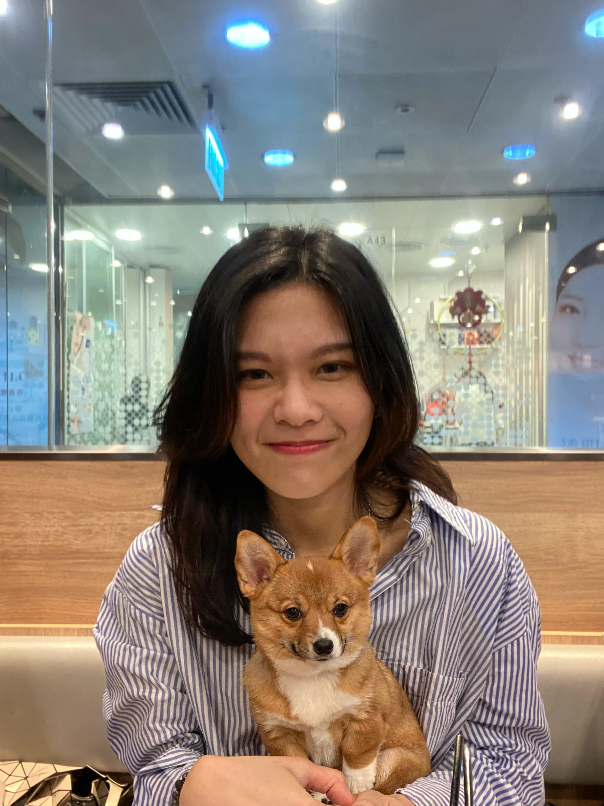
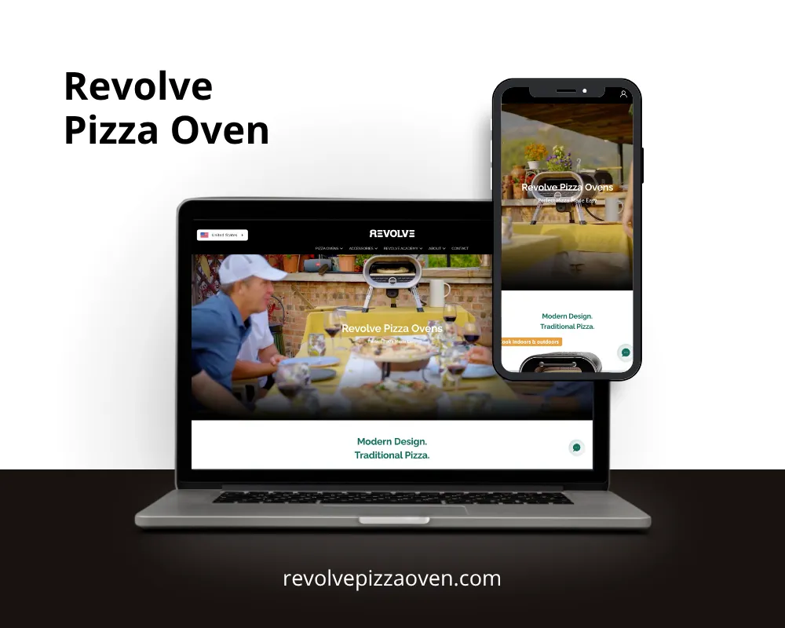
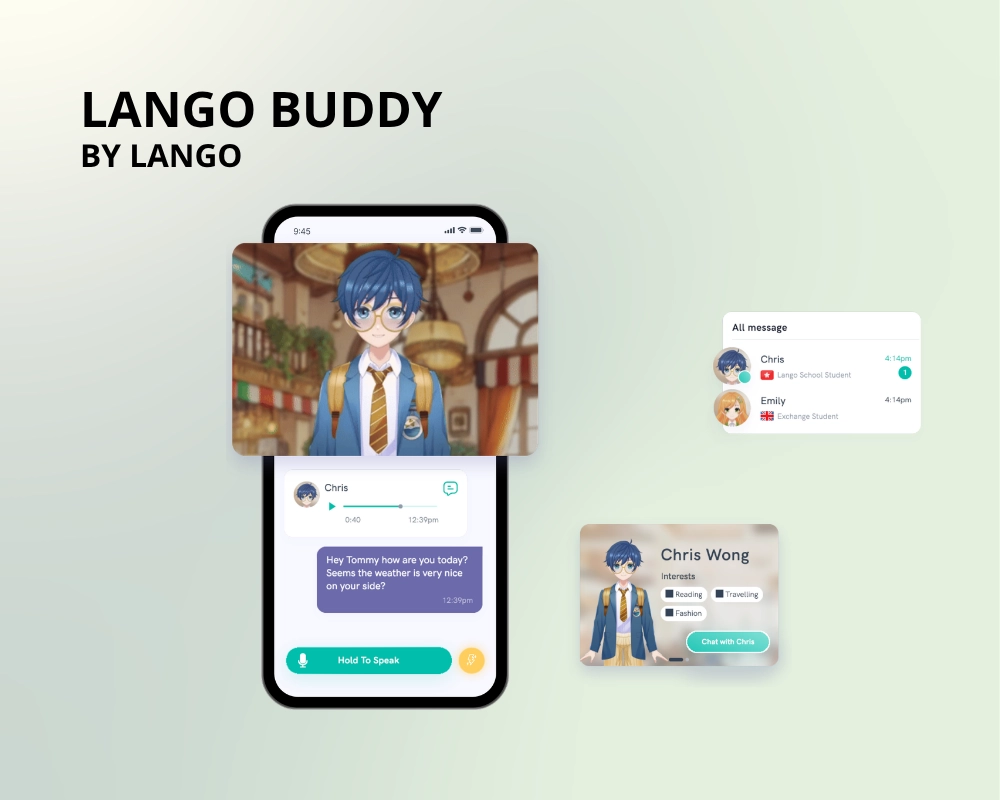
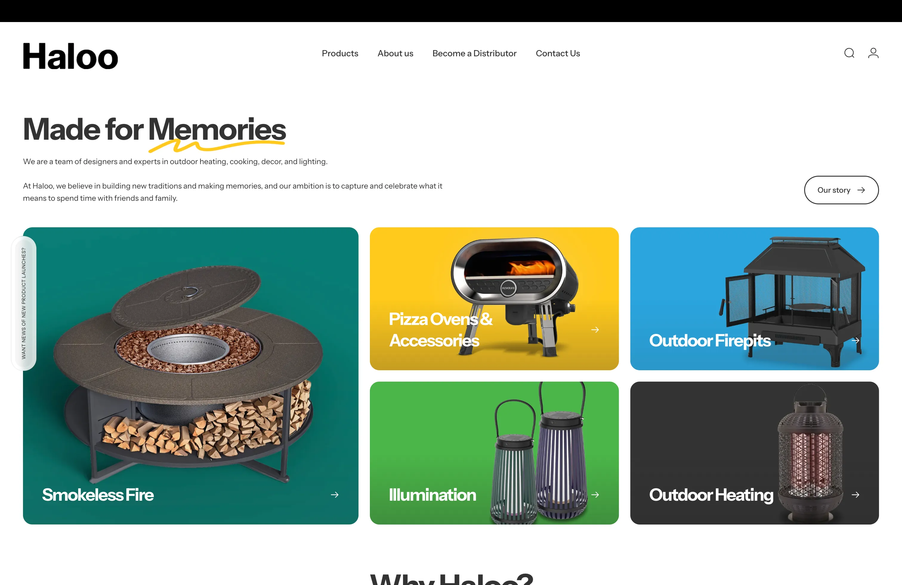

RAC CHAN
A product designer with 3 years experience in UXUI and project management.

"As a designer, I take a pragmatic and data-driven approach to problem-solving.
I know how to be flexible, but I also know when to slow down and perfect the details.""
Selected Work

Revolve Pizza Oven
Redesigning the Shopify architecture and digital product experience for the flagship "Evolve" model to drive conversions in a saturated market.
VIEW PROJECT
Lango Buddy
Designing tailored characters and gamified chat missions to eliminate students' fear of judgment and increase learning retention by 92%.
VIEW PROJECT
Haloo Brands
Driving B2B e-commerce growth through a comprehensive website revamp, strategic brand positioning, and streamlined wholesale ordering.
VISIT THE WEBSITEExperience
- Led end-to-end digital redesign of Shopify platforms (Revolve B2C, Haloo B2B), increasing conversion rates by 80%.
- Formulated social media and marketing collateral strategies expanding brand reach by 120%.
- Managed independent design projects and stakeholder liaison directly with Costco buyers.
- Led design of "Lango Buddy", securing 12 new school subscriptions and boosting adoption to 92%.
- Partnered with 5 community schools to conduct regular usability assessments with primary students.
- Designed a comprehensive design system streamlining developer collaboration.
- Assisted in membership website experience design, driving +150 individual sign-ups.
- Audited website accessibility based on +70 user surveys to improve inclusion metrics.
- Created a reusable component library in Figma for future scaling.
Skills & Expertise
Project Management
UX Design
Tools & Others
B2B Design Strategy
[Placeholder for understanding B2B wholesale buyers and bulk ordering workflows for Haloo Brands]
[Placeholder for Decision Making: prioritizing data presentation and streamlined checkouts]